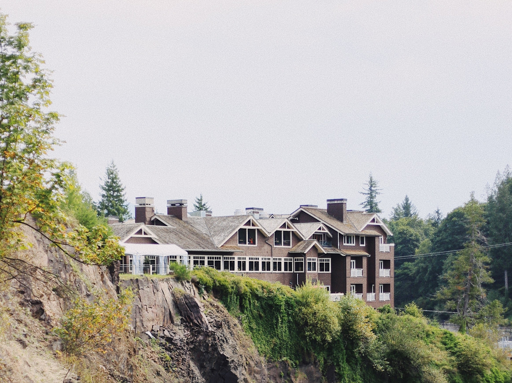

- Willows Lodge
- TreeHouse Point
- Salish Lodge and Spa
Willow lodge is 30 minutes drive from the city. It is located in Woodinville wine country. Enjoy some wine and amazing food during your stay. Try out the Herbfarm Restaurant and have a nine-course dinner with your family.
Rooms have fireplaces and cozy bathtubs to pamper you in all seasons. Take a stroll across the hotel gardens and indulge in a spa session and get a massage. The restaurant has received Wine Spectator's Award of Excellence and guests are welcome to take a wine tour which is quite popular.

This ones for a nature freak and is about 35min away from Seattle. They have vintage style treehouses with handmade beds. Take long naps, read a book and enjoy the blissful nature.
You can also visit the nearby farmer's markets, explore the hiking trails and just explore the nature around.

Salish Lodge and Spa overlooks the famous Snoqualmie Falls and is about 35 minutes away from the city. It is one of the top weekend getaways in the Pacific Northwest.
The rooms have whirlpool tubs and wood-burning fireplaces and you can enjoy beatiful views of the falls from your room.
